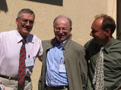

In May 1994, the first International WWW Conference, organized by Robert Cailliau,[10][39] was held at CERN;[40] the conference has been held every year since. In April 1993, CERN had agreed that anyone could use the Web protocol and code royalty-free; this was in part a reaction to the concern caused by the University of Minnesota's announcement that it would begin charging license fees for its implementation of the Gopher protocol. In September 1994, Berners-Lee founded the World Wide Web Consortium (W3C) at the Massachusetts Institute of Technology with support from the Defense Advanced Research Projects Agency (DARPA) and the European Commission. It comprised various companies that were willing to create standards and recommendations to improve the quality of the Web. Berners-Lee made the Web available freely, with no patent and no royalties due. The W3C decided that its standards must be based on royalty-free technology, so they can be easily adopted by anyone.
link examples go to facebook send us a mail with femi@gmail.com 0905623785726 